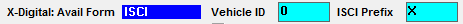

ISCI Cross Reference Export
The ISCI Cross Reference is used with the X-Digital system to ensure that engineering and continuity are using the same names when labeling client commercials. Copy must be assigned before running this report.
Affiliate ISCI Cross Reference Export
To export a list of generic ISCIs for selected vehicles in a specified date span, and cross-reference the generic ISCIs with all the Regional ISCIs which can replace the generic ISCI.
- Unique ISCI by Vehicle – a list of all the generic and regional ISCI codes unique to a vehicle for a span of dates.
- Unique ISCI by Vehicle and Station - a list of all the generic and regional ISCI codes unique to each affiliate of a vehicle for a span of dates.
- ISCI by Break – a list of each spot to air for each station, in log order, whether generic or regional, in break and position number order. This export method includes two additional features. The ability to include Program Segment entries, and the station Affidavit Contact Email address.
Affiliate ISCI Export Procedure
- Generate or assign copy in Traffic
- Export Start Date: Enter the start date of the export
- Number of Days: Enter the number of days to be exported (maximum = 7)
- The export is designed for split copy, but if you wish to include advertisers without copy splits, click “include generic copy lacking split copy”, and all advertisers will be included.
- If Break and ISCI are selected as options in Traffic -> Site Options -> Exports, the following choices appear: ISCI Prefix: Break or National ISCI Model. Select the method you wish to use.
- If you do not want the export to be saved to the default export folder, browse to the desired folder using the Browse button.
- Select the Vehicles and click Export
Affiliate ISCI Cross Reference Output
The ISCI Cross Reference produces a txt file, that can be viewed in the Messages Viewer feature.
File Name
SSYYYYMMDD.xis or SSYYYYMMDD-YYYYMMDD.xis
- SS = Vehicle Station Code
- The first YYYYMMDD is the requested start date
- The second YYYYMMDD is the end date obtained from the requested start date and number of days
- The end date is only included if more than one day is being generated
File Structure
The description of each line is shown in parentheses.
[Split1]
(Index for separate each set of Generic copy and Region copy from other Generic and region copy. Starting value is one (1))
:
:
[Split17]
GenericCartNumber=C009
(Cart number of the generic copy)
GenericIsci=DM_ASDF_2934
(ISCI avail form and by break avail form: ISCI prefix [if defined] with ISCI defined with the generic copy)
(By Break avail form with advertiser abbreviation setting enabled: Advertiser abbreviation, parentheses, ISCI prefix, ISCI, audio extension)
GenericCreativeTitle=Sharks Attack Cage
(Creative Title from the generic copy)
RegionIsci1=DM_NYISCITest
(ISCI prefix [if defined] plus ISCI defined for the region copy)
RegionName1=NY Region Test
(Region Name associated with the region copy)
RegionFilename1=DM_NYISCITest.mp2
(ISCI avail form and by break avail form: prefix [if defined] plus ISCI plus audio extension)
(By Break avail form with advertiser abbreviation setting enabled: Advertiser abbreviation, parentheses, ISCI prefix, ISCI, audio extension)
[Split18]
(Index for separate each set of Generic copy and Region copy from other Generic and region copy. Starting value is one (1))
GenericCartNumber=C472
GenericIsci=DM_ACSP6_-_3684
GenericDescription=Winterize
[Split19]
Prefix = All ISCI exported are prefixed with the ISCI prefix value if defined in the Traffic Site Options -> Lists -> Interface tab:

Custom Audio Extension
Should you need the audio extension to be different than mp2, you can enter the correct audio extension name in the Affiliat.ini file, under the Locations section.
The audio extension can be any of the following: Xxx, “Xxx”, .Xxx, or “.Xxx”. The extension will appear lowercase, unless it is part of the file name or caption.
Affiliat.ini example:
AudioExtension = .csi
Custom Default Export Path
The ISCI Cross Reference export has a feature on version 8.1 and above that allows special default export path to be specified that is different from the standard default export path.
To use this feature, the following parameter must be added to the Affiliat.ini file, to the “Locations” section, with the path “c:\custom” replaced with drive letter and path/destination folder that should be used to set the default export path:
ISCIxRefExport = c:\custom
After adding this parameter to the Affiliat.ini and saving the change, when launching the affiliate system and the ISCI Cross Reference Export, the custom path defined here will be used as the default export path. Note that this only sets the default path, and that it can still be overridden to a different folder if necessary.